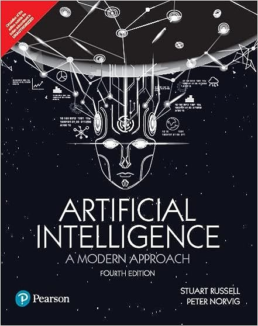

Using AI and related tools in classroom teaching and assement
Agenda
- AI
HypeTrends & Educational Gaps - Use Case 1: Using Generative AI for code completion
- Use Case 2: Demystifying AI for Finance Students
- Using Generative AI in Teaching (Benefits, Limitations, Challenges)
AI Hype Trends
Academia

Funding
2023 AI Index Report from the Stanford Institute for Human-Centered Artificial Intelligence (HAI):
Key takeaways
Industry outpacing academia in releasing machine learning models
AI’s mixed impact on the environment
AI accelerating scientific progress
Increase in incidents of AI misuse
Growing demand for AI-professional skills in the U.S.
Decrease in private investment in AI
Stagnation in AI adoption by companies, but those adopting are benefiting
Increased policymaker interest in AI
Click here for full report. These takeaways are drawn from a diverse range of sources, including data and analysis covering various aspects such as AI geopolitics, environmental impact, education trends, and public opinion. The report indicates a dynamic field with significant advancements, emerging challenges, and a nuanced public reception of AI technologies globally.
AI Hype Trends & Business School Education
AI Index Report trends point to a number Business School educational needs:
Safety
Ethics
Regulation and compliance
Risk & Control
AI Hype : Is it different this time?
Historically, the positive fallout from technology adoption waves, empowers some humans, typically to the detriment of others.
This time is could be different, as AI is the first tool in history:
- that can “make decision” by itself
- that can create “new ideas” by itself
Such properties have lead to the development of the areas of AI Safety.
Important
For more details listen to Yuval Noah Harari on AI Safety
My Teaching
- I teach a module in AI on the master course Financial Analytics.
- In the module I was the following learning objectives and outcomes
Outcomes
- Develop principled mathematical know-how for algorithmic control
- Understand the statistical principles of Generative AI
- Successful apply Generative AI to a industry relevant problem statement
- Actively learn how to build and deploy a zero-shot AI inference machine
Objectives
- Understanding algorithmic risk and control
- How to be a responsible early adopter of an emerging technology
- How to use AI tooling to improve productivity
- How to be intellectually humble, curious, and critical
- Be industry relevant
Use Case 1: Code Completion
- To maximise productivity in coding my students learn how to combine VScode IDE with Github’s Copilot
Use Case 2: Demystifying AI
This involves a principled approach to understanding AI through some passive learning in lectures
Then I set a graded assignment where students set a classic problem statement in financial research, using GPT models to solve this problem and critique the answer.
Firstly, I provide some theoretical definitions of AI and contextualise these with finance examples
Secondly I provide some interactive tutorials where we learn how to critique the GPT model in the context of statistical and AI theory
What follows is an excerpt of the passive lecture material
Use Case 2: Demystifying AI

Key takeaways
Definition of AI
Agents and Environments
Problem-Solving
Knowledge Representation
Planning
Uncertainty
Learning
Natural Language Processing
Robotics
Ethics and Future
Demystifying AI
- AIMA provide four definitions of AI based on Thought vs. Action
Summary: Leveraging computational models to simulate human cognitive processes.
- Examples:
- Neural Networks: Used for credit scoring by analyzing a large dataset of customer information to predict creditworthiness.
- Cognitive Architectures: Designing intelligent systems to simulate traders’ decision-making processes in stock markets.
- Summary: Constructing AI systems capable of logical inference to symbolize knowledge and solve complex problems.
- Examples:
- Classical AI: Developing rule-based systems for regulatory compliance and monitoring.
- Expert Systems: Creating platforms that offer financial advice based on a vast knowledge base and rules set by financial experts.
- Summary: Crafting rational agents optimized to take the most beneficial actions based on their perceived understanding of the world.
- Examples:
- Decision-Making Algorithms: Algorithms facilitating high-frequency trading by making rapid decisions based on market conditions.
- Planning: Utilizing AI in strategic financial planning and asset management to maximize returns.
- Summary: Crafting rational agents optimized to take the most beneficial actions based on their perceived understanding of the world.
- Examples:
- Decision-Making Algorithms: Algorithms facilitating high-frequency trading by making rapid decisions based on market conditions.
- Planning: Utilizing AI in strategic financial planning and asset management to maximize returns.
- Learning Techniques: Applying reinforcement learning in algorithmic trading to learn and adapt trading strategies continuously based on market dynamics.
Teaching GPT
GPT stands for:
Generative
Pre-trained
Transformer
- Generative
- Denotes the model’s ability to fabricate text data that is coherent and pertains to the given input.
- Pre-trained
- Refers to the initial training phase where the model acquires a foundational understanding of language and context from large datasets, facilitating nuanced responses in specific tasks later on.
- Transformer
- Pertains to the Transformer architecture foundational to the model, a significant advancement in natural language processing introduced by Vaswani et al. (2017), which employs attention mechanisms to understand the contextual relationships between words in a sentence more precisely.
Teaching GPT
G
P
T
So, GPT is a type of machine learning model that uses the Transformer architecture, is pre-trained on a large corpus of text, and can generate new text based on the inputs it receives.
GPT framed using the AIMA definitions
Thinking Humanly
While Generative AI models like GPT do not exactly replicate human cognition, they do aim to mimic human-like text generation capabilities. By being trained on a vast corpus of human-generated text, these models try to capture the nuances and complexities of human language.
Thinking Rationally
From a rational perspective, Generative AI does not focus on logical reasoning as its primary function. However, it does try to predict the “next word” in a sequence as accurately as possible based on probabilistic models, thus making a “rational” choice among the possible word options.
Acting Humanly
Large Language Models excel in this category. They are designed to generate text that is indistinguishable from that written by a human. This is similar to passing a Turing Test in the domain of natural language text, where the generated text is often coherent, contextually relevant, and can even be creative or emotional.
Acting Rationally
In the rational agent framework, these models act to maximize an objective function during the training phase. The objective is usually to minimize the difference between the predicted and actual next word in a sequence. So, in that sense, they are acting “rationally” to achieve the best performance based on the data they were trained on.
Summary
Generative AI using Large Language Models can be seen as a hybrid in the context of AIMA’s definitions. They lean towards “Acting Humanly” in their primary function, which is to generate human-like text. However, they are built and operate on principles that aim for rational action, specifically maximizing the likelihood of their predictions given the data they have seen. While they don’t fully encapsulate logical reasoning (Thinking Rationally) or strive to replicate human cognition (Thinking Humanly), they represent an intersection of acting both humanly and rationally in the specific domain of natural language text.
AI Trends & Business School Education (According to GPT4)
- Personalised Learning Paths
- AI algorithms identifying individual learning patterns
- Customized educational content based on learner’s progress and preferences
- AI-Enhanced Content Delivery
- Smart content creation: interactive and dynamic learning materials
- Virtual tutors providing 24/7 assistance and feedback
- Real-Time Analytics and Feedback
- Systems tracking student progress in real-time
- Immediate feedback for continuous improvement
- Simulation and Modeling
- Hands-on experience with AI-driven financial simulations
- Real-world business case studies created using AI technologies
- Predictive Analytics in Course Design
- Predictive models assisting in course design based on industry trends and demands
- Anticipating student needs and preferences for more effective teaching
- Automated Administrative Tasks
- Automation of grading and attendance tracking
- AI-driven tools for plagiarism detection and ensuring academic integrity
- Collaborative Learning Environments
- AI-facilitated group projects and collaborative learning platforms
- Peer review and feedback systems enhanced with AI insights
- Incorporating Real-Time Market Dynamics
- Incorporating live market data and trends in the curriculum
- AI tools providing insights on recent developments in the finance sector
- Career Guidance and Development
- AI-driven career counseling based on industry demands and student preferences
- Predictive analytics for job market trends and opportunities
- Ethical Considerations
- Courses on the ethical implications of AI in business
- Encouraging critical thinking on the societal impacts of AI
AI Trends & Business School Education (My Output)
- Automated Administrative Tasks
- Automation of grading and attendance tracking (I can do this with GitHub Classroom)
- AI-driven tools for plagiarism detection and ensuring academic integrity (Some of my colleagues in Computer Science are working on algorithms to do this)
- Ethical Considerations
- Courses on the ethical implications of AI in business (We are doing this??)
- Encouraging critical thinking on the societal impacts of AI (And this?)
Thanks & Questions